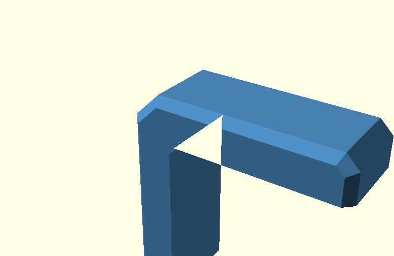
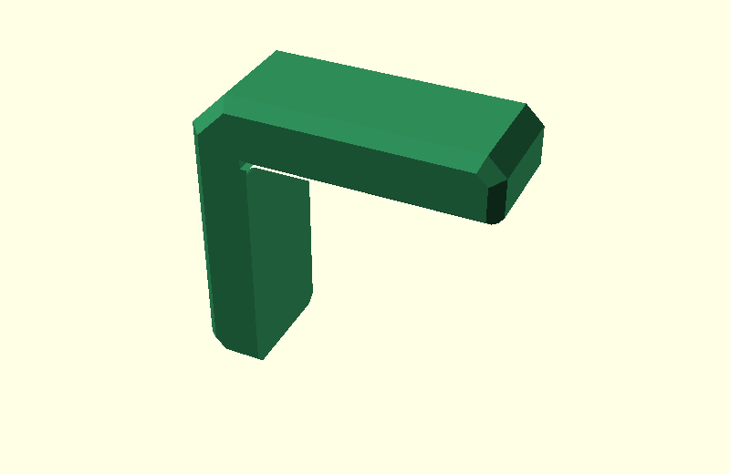

Corner Bracket: cs/ef junction on the real L
This walkthrough now keeps the picture as simple as possible:
- the real L-shaped bracket stays in the same place;
- no detached section planes are shown;
- the proposed elephant-foot step is visualized with two full 3D arm volumes, just like the beam example.
The production model is still unchanged.
0. L with the existing cs chamfer

This is the real body().
1. Current result before the extra corner correction

This is the current broad elephant-foot relief before
relief_corner_miters().
The only point of interest is the small arm-tip junction.
2. Proposed inputs: two real 3D arm volumes

The whole L stays faintly visible.
The colored shapes are no longer thin vertical profile planes:
- blue: the lower horizontal-arm volume, already carrying the
csgeometry; - orange: the upper horizontal-arm volume, also already carrying the same
csgeometry.
The lower volume is the smaller ef input. The upper volume is the normal
already-chamfered arm.
So this is the direct Corner Bracket equivalent of the successful beam test:
both hull inputs already contain the side chamfer before hull().
3. Hull those two arm volumes

Only the local horizontal arm is hulled.
The complete L is not put into one global hull(), so the concave inside
corner cannot be filled in.
4. Proposed L result

The proposed local arm hull is placed back into the unchanged L.
This page is only meant to make the geometry understandable. Once this view is visually correct, the next step is to express the same minimal idea cleanly in the production model.
Interactive source
Open
design/ef_cs_junction_explained.scad
and use the junction_step dropdown.